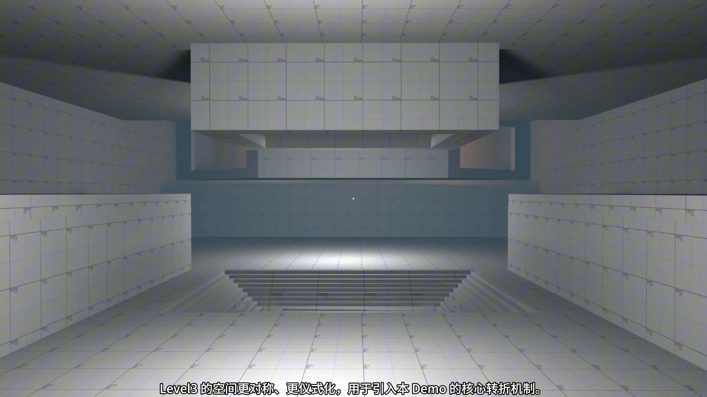
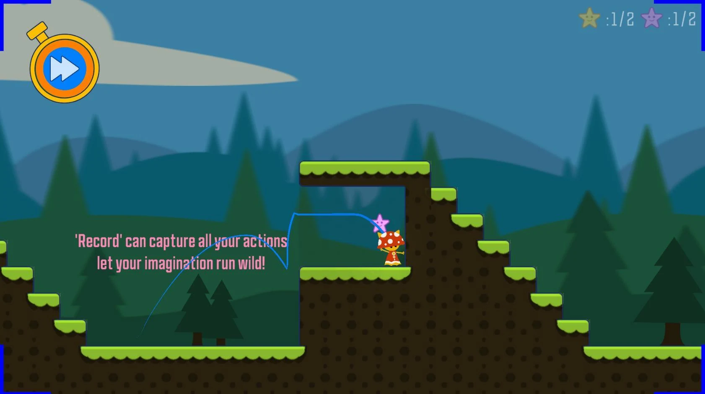
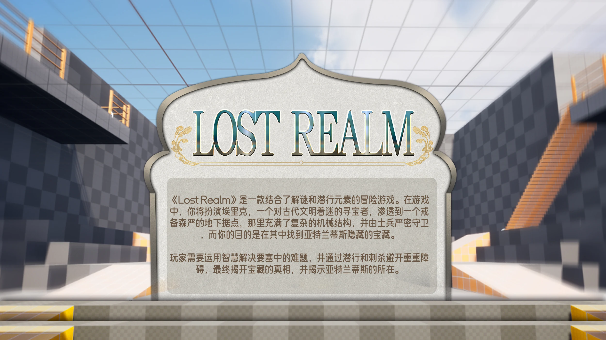
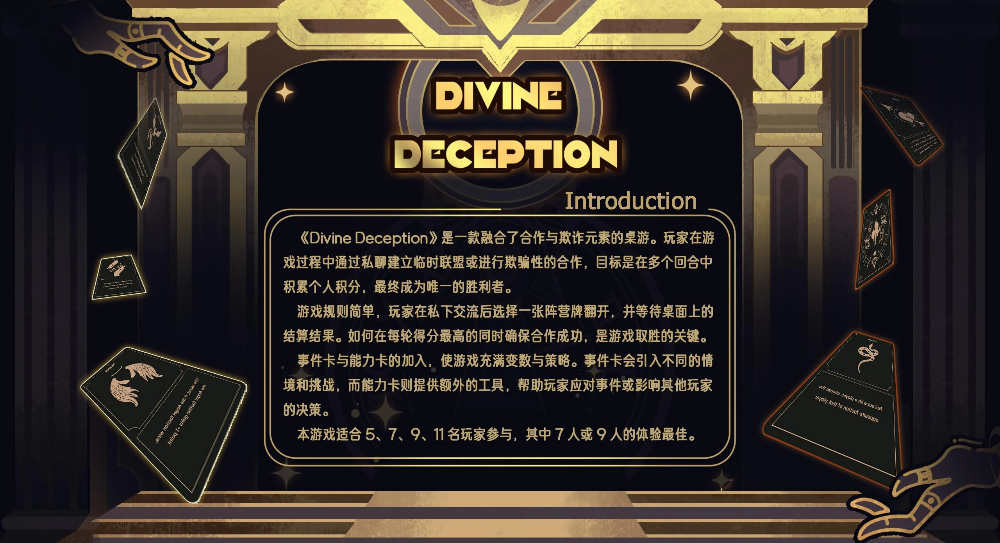
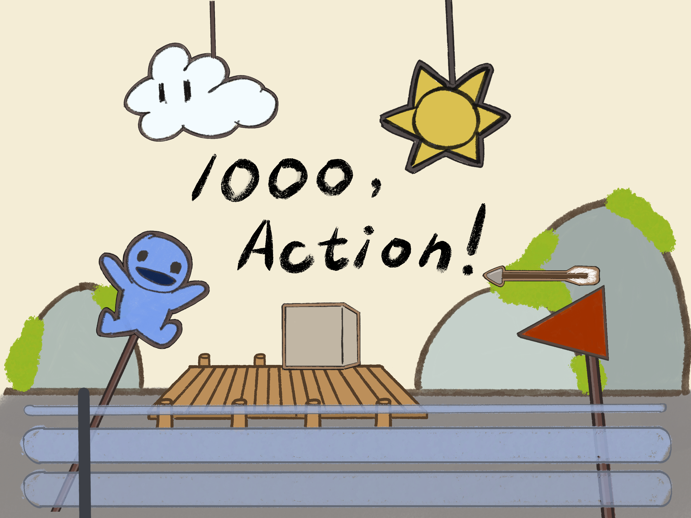
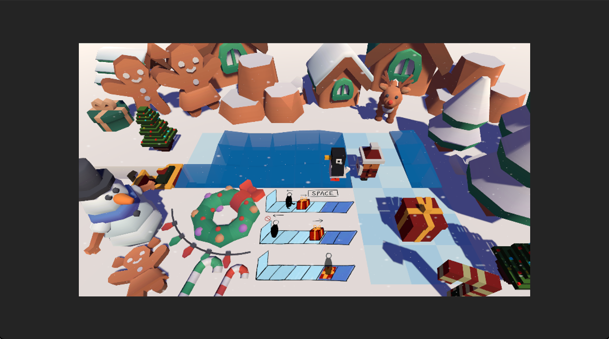

LEVEL DESIGN / PLAYER GUIDANCE / PUZZLES
PORTFOLIO / 2026DESIGN
FOR PLAY.

SPATIAL STUDY / 3D BLOCKOUT 冰面之下SELECTED WORK / 01—06
玩法，落在作品里。
个人项目与团队创作
从桌面规则到三维空间

01GAMEPLAY / SYSTEMS
Memorizer
记录一段动作，在新的位置重放。将移动、跳跃与机关操作重新组合，抵达原本无法到达的地方。
查看项目
02
LEVEL DESIGN / SPATIAL PUZZLE
冰面之下
冰既能铺出道路，也能打开空间。在水上工厂中逐步掌握冰冻与破冰，再从熟悉场景的另一面寻找出口。
查看项目
03LEVEL DESIGN / BLUEPRINT
Lost Realm
通过潜行、机关与空间变化，探索三层箱庭。让玩家在学习规则的同时，逐步建立对整张地图的理解。
查看项目
04BOARD GAME / SOCIAL DEDUCTION
Divine Deception
每轮私聊后秘密选择阵营：全员一致可以共同得分，足够少的少数派却能赢得更多。围绕承诺与人数预判，争取个人胜利。
查看项目
05GAME JAM / LEVEL DESIGN
1000, Action!
像剪辑视频一样解谜。利用时间轴与遮罩改变事件的发生关系，在有限时间里构建因果推演的挑战。
查看项目
06GAME JAM / PUZZLE DESIGN
Peng-Win!
踢动企鹅，预测滑行终点。利用冰面、水面和箱子改变路径，将企鹅送进雪橇。
查看项目ABOUT / 陈品元
关注规则，
也关注规则
如何被理解。
游戏设计与技术背景，关注玩法机制、解谜设计与关卡空间。
在哥德堡大学攻读 Game Design and Technology 硕士。以计算机科学为基础，将设计想法转化为可运行的原型，再通过测试调整玩家的学习过程与挑战节奏。
- 2025—2027
- 哥德堡大学
Game Design and Technology · 硕士在读 - 2020—2024
- 北师香港浸会大学
计算机科学与技术 · 荣誉理学学士 - TOOLS
- Unity / Unreal Engine / C# / Blueprint
Git / Photoshop / Spine